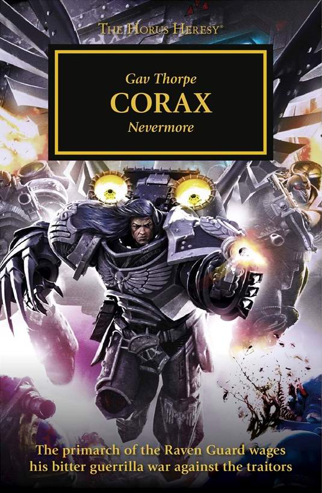

SOULFORGE

Author: Gav Thorpe
Format: Novella
The surviving Raven Guard remain defiant after Isstvan V, and evidence recovered behind enemy lines points to a pact between the Word Bearers and a Mechanicum forge world supplying dreadful new war machines. Corvus Corax judges the threat too great to ignore.
Listed in: Corax.
Introduction reviewed against Black Library’s description on 2026-09-27. The publisher page may contain spoilers.
Publication facts: publisher source, checked 2026-09-26.
Open this work in the interactive Archive to track reading progress and explore related works.
Take the three-question memory check for this work. The quiz contains story spoilers.